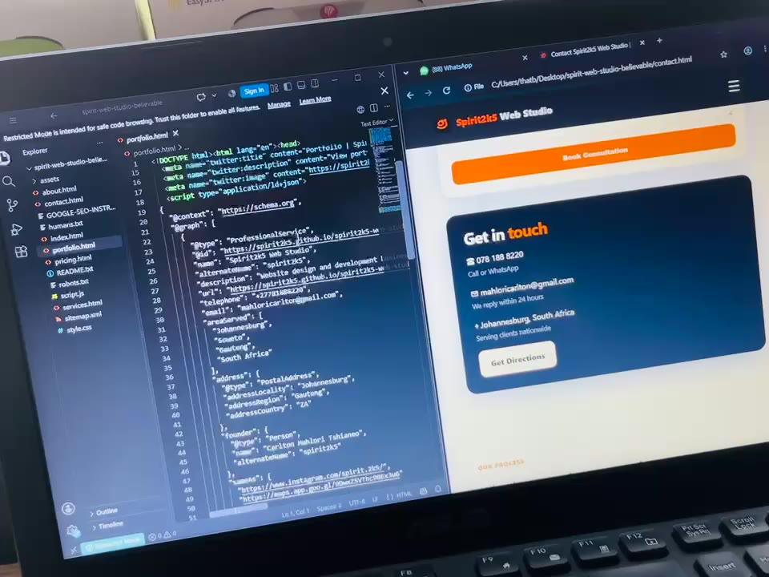

Mobile experience
Does the layout work properly on a phone without awkward spacing, overflow or tiny controls?
Free 5-point website check
This is for businesses that already have a website but are not sure what is holding it back. I’ll look at five practical areas and send you a short response.
Send website on WhatsApp →
Does the layout work properly on a phone without awkward spacing, overflow or tiny controls?
Can a new visitor quickly understand what the business does and who it helps?
Is it obvious how to call, WhatsApp, enquire or buy without hunting through the site?
Does the site show enough real business information, proof and credibility for a customer to feel comfortable?
I’ll flag obvious problems such as broken pages, poor page structure or missing search foundations that are visible from a quick review.
What you receive
I will focus on problems that a normal customer could notice or that make it harder for the website to do its job. That might include a confusing first screen, weak contact options, poor mobile spacing, missing trust information, unclear services or obvious technical issues. I am not promising a full paid SEO audit or a complete redesign for free. The point is to give you a useful starting point and help you decide whether the website needs a small fix, a redesign or no major work at all. If the site is already doing the basics well, I will say that too.
No obligation
If I think the site is already fine, I’ll say that. If I see problems I can help with, I’ll explain them and you can decide what to do next.